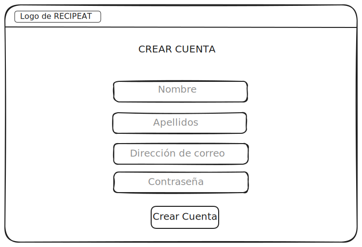

Esta página describe la apariencia de la web, incluyendo bocetos creados con Excalidraw de las distintas páginas intermedias que verán los usuarios. Estos diseños iniciales pueden ser modificados en el transcurso del proyecto.
En este boceto se puede apreciar la pantalla de inicio de la aplicación, incluyendo elementos como el logo, la barra de navegación y un contenido introductorio. El usuario, si desea registrarse o iniciar sesión, tendrá que hacer click sobre el icono verde. En cambio, si desea navegar por las demás páginas que proporciona la plataforma, el cliente deberá pinchar sobre el otro icono. Usuarios no registrados no tendrán la misma accesibilidad que aquellos que esten registrados en la aplicación.
Esta será la vista que tendrán los usuarios al registrarse. Se les pedirá datos como nombre completo, correo electrónico y contraseña. Si el parseo tiene sentido, el usuario será registrado en la base de datos.
Si el usuario ya se encuentra registrado en la base de datos, la interfaz cambia. En este caso el cliente visualizará el contenido de forma similar al de la imagen. Por consiguiente, lo único que se le pedirá al usuario es que inserte su dirección de correo electrónico así como su contraseña. Tras haber insertado lo pedido y una vez que las comprobaciones para identificar al usuario sean exitosas, el login estaría completado. El administrador también iniciará sesión desde esta interfaz.
En esta página se mostrarán los platos de comida. El usuario puede filtrar la búsqueda por ingredientes, plato específico... Se mostrará la imagen del plato seguida de una breve descripción. Una vez hecho click sobre la imagen, el cliente se redireccionará a una nueva página donde aparezca con más detalle el plato, es decir, método de preparación, comentarios de otros usuarios, etc. De este modo, implementaremos la funcionalidad de sistema de recomendaciones personalizadas.
Si el usuario esta logueado, recibirá sugerencias de recetas basadas en sus preferencias culinarias, historial de interacciones o ingredientes que tenga disponibles.
Así es como se ilustraría la página una vez se haya seleccionado el plato:
El boceto de arriba y el siguiente corresponden con la funcionalidad de interacción social. Debajo de los comentarios, tendremos otra caja donde el usuario pueda dejar su comentario si así lo desea.
El admin podrá realizar todo tipo de modificaciones, tanto para términos soeces, como modificacion de fotos...
Una vez el usuario haya iniciado sesión, podrá acceder a su perfil desde el cuál podrá agregar, modificar o eliminar recetas. Además, podrá visualizar los datos de su cuenta. El administrador tendrá una interfaz similar, pero con más opciones de "superusuario". La funcionalidad de este boceto resulta ser la de gestión de recetas.
Desde la página donde se muestra la receta y los pasos que hay que seguir para poderla a cabo, exisitirá un botón "COMPRAR INGREDIENTES". Aquí, intentamos ilustrar la funcionalidad de lista de la compra automática.
Al pulsar sobre este botón, el usuario será redirigido al pago de los ingredientes, otorgados por un proveedor.
Una vez el cliente vea la lista visualizada, podrá proceder al pago de esta, modificarla o descargarla para poder tenerla a mano a la hora de empezar con la elaboración del plato. El administrador, en este caso, puede controlar el uso que hace el cliente sobre la lista cuando quiera modificarla.